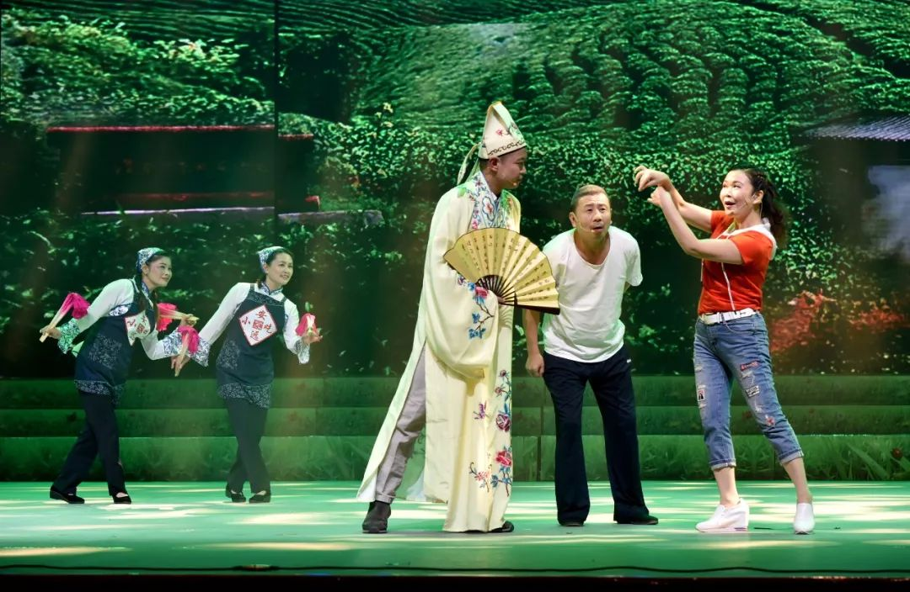

安远采茶戏
赣南采茶剧，主要发源于赣南信丰、安远一带，采茶戏与盛产茶叶有关。明朝，赣南、赣东、赣北茶区每逢谷雨季节，劳动妇女上山，一边采茶一边唱山歌以鼓舞劳动热情，这种在茶区流传的山歌，被人称为“采茶歌”。由民间采茶歌和采茶灯演唱发展而来，继而成为一种有人物和故事情节的民间小戏，由于它一般只有二旦一丑，或生、旦、丑三人的表演，故又名“三角班”。赣南采茶戏形成后，即分几路向外发展，与当地方言和曲调融合，形成赣东、西、南、北、中五大流派，每个流派中又有不同的本地腔。江西采茶戏总的特点是：表演欢快，诙谐风趣，载歌载舞，喜剧性强，富有浓郁的乡土气息，颇受群众喜爱。

唱采茶歌发展为采茶戏有几个阶段。采茶歌最早只唱小调，每句仅有四句唱词，如“春日采茶春日长，白白茶花满路旁；大姊回家报二姊，头茶不比晚茶香。”这种小曲生动活泼，委婉动听。采茶歌再经发展，便由来茶小曲组成了“采茶歌联唱”，名曰“十二月采茶歌”。如“正月采茶是新年，姐妹双双进茶园，佃了茶园十二亩。当面写书两交钱。二月采茶......。”后来，“十二月采茶歌”又与民间舞蹈相结合，进入元宵灯彩行列，成为“采茶灯”,“采茶灯”主要唱调是[茶黄调]、[摘茶歌]、[看茶调]、[报茶名]等。它由姣童扮成采茶女，每队八人或十二人，另有少长者二人为队首，手持花篮，边唱边舞，歌唱"十二月采茶"。这种"采茶灯"形式简单，纯属集体表演的歌舞，但是它已向采茶戏迈了一步。

明朝，盛产名茶的赣南安远县九龙山茶区，茶农为了接待粤商茶客，常用采茶灯的形式即兴演出以采茶为内容的节目。即从“采茶灯”中八个(或十二个)采茶女中分出二人，为旦角大姐、二姐，再留一个队首作丑角，正好是二旦一丑的"三角班"。姐妹二人表演上山采茶，手持茶篮，边唱边舞，唱着“十二月采茶歌”(每人轮唱六个月)；扮丑角的手持纸扇在中间穿插打趣。这就是原始节目《姐妹摘茶》。再后增加了开茶山、炒茶、送哥卖茶、盘茶等细节，丑角扮成干哥卖茶，便更名为《送哥卖茶》。这种采茶灯(又名“茶篮灯”)的演出已是采荼戏的雏型了。赣南的“茶篮灯”不断增加新的内容，又涌现了表演其他劳动生活的、由二旦一丑或一旦一丑扮演的小戏，如《秧麦》、《挖笋》、《补皮鞋》、《捡田螺》、《卖花线》、《磨豆腐》等等，因用采茶调演唱，一唱众和，尚无管弦伴奏，便统名为“采茶戏”。采茶戏因是从民间歌舞、灯彩发展形成的地方戏曲，演出剧目又多反映劳动人民的生活，其音乐唱腔又多民歌风味，故深受人民群众喜爱。